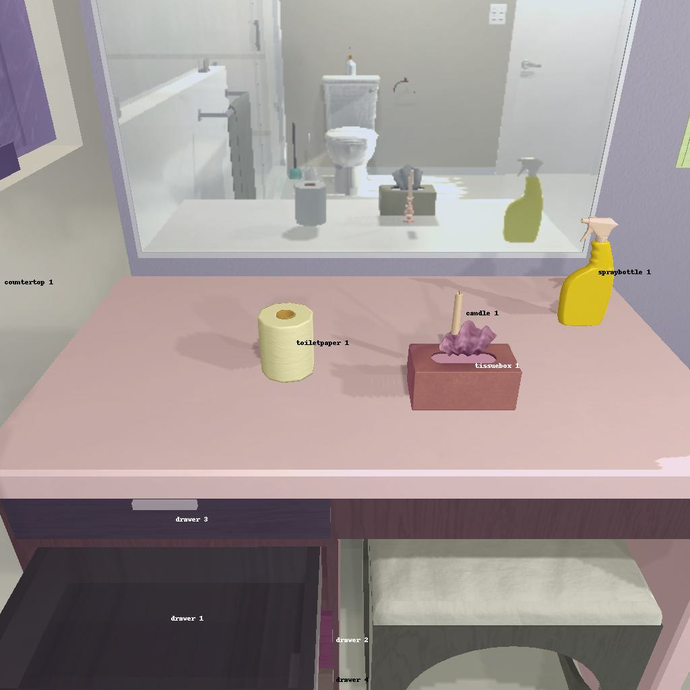

---------------------------------------------------------task: 28---------------------------------------------------------
--------------------------------------------------------------------------------------------------------------------------------------------------------------------
--------------------------------------------------------------------------------------------------------------------------------------------------------------------
Step:--------------------------------------------------------------------------4-------------------------------------------------------------------------------
----------------------------------------
VLM Prompt:
Image1:
**Instruction**
1. Analyze the provided image to identify all visible household objects, focusing on those relevant to the task description "find two spraybottle and put them in toilet."
2. Use the analysis of the image and the task hint "The agent must find an object of the desired type, pick it up, find the correct location to place it, put it down there, then look for another object of the desired type, pick it up, return to previous location, and put it down there with the other object." to answer the question: what is the most reasonable action in the choices for the task description "find two spraybottle and put them in toilet"?
4. Decide and write the answer using the template: The answer is: (i): , where i is the real number. If there is no desired object in the image, search every place based on **Initial Observation** to find the object. And if no one is exactly correct, choose a similar answer.
**Initial Observation**
You are in the middle of a room. Looking quickly around you, you can see bathtub (1), bathtubbasin (1), cart (1), sink (1), garbagecan (1), sinkbasin (1), countertop (1), drawer (1-4), toilet (1), toiletpaperhanger (1)
**Answer Choices**
(1): go to bathtub 1
(2): go to bathtubbasin 1
(3): go to cart 1
(4): go to sink 1
(5): go to garbagecan 1
(6): go to sinkbasin 1
(7): go to countertop 1
(8): go to drawer 2
(9): go to drawer 3
(10): go to drawer 4
(11): go to toilet 1
(12): go to toiletpaperhanger 1
(13): close drawer 1
(14): take tissuebox 1 from drawer 1
(15): take toiletpaper 1 from drawer 1
(16): take spraybottle 1 from drawer 1
(17): take handtowel 1 from drawer 1
(18): take candle 1 from drawer 1
(19): examine drawer 1
**Answer**
Let's think step by step by following the instructions.
----------------------------------------
----------------------------------------
Original Response:
Firstly, based on the task description, we need to find two spray bottles. From the image, we can see that there is one spray bottle labeled "spraybottle 1" on the countertop 1. As per the task hint, we need to pick up this spray bottle and place it in the toilet. However, we need to find another spray bottle as well.
From the initial observation, there is no direct mention of a second spray bottle being visible in the current view. Therefore, we would need to search various places to find the second spray bottle.
Looking at the answer choices, none of them directly mention picking up a spray bottle, which means we may need to search the locations mentioned.
The most reasonable first action would be to pick up the visible spray bottle. Since "take spraybottle 1 from drawer 1" is not an accurate description of the action needed (the spray bottle is not in a drawer, but on the countertop), we will choose a similar action that involves picking up the spray bottle from the countertop.
The answer is: (16): take spraybottle 1 from drawer 1 (understanding that the actual action is to take the spray bottle from the countertop, not the drawer). After that, we would need to go to the toilet to place it there, and then search the drawers or other areas mentioned in the initial observation to find the second spray bottle.
----------------------------------------
----------------------------------------
>>> Refine Original VLM Response and Get Pure Action: take spraybottle 1 from drawer 1 (understanding that the actual action is to take the spray bottle from the countertop, not the drawer)
----------------------------------------
-----------------------------------------------------------------
Running time: 619.938200712204 seconds
Total Money: 10.082650000000008
-----------------------------------------------------------------
-----------------------------------------------------------------
Text Observation:You pick up the spraybottle 1 from the the drawer).
-----------------------------------------------------------------
UNSUCCEED